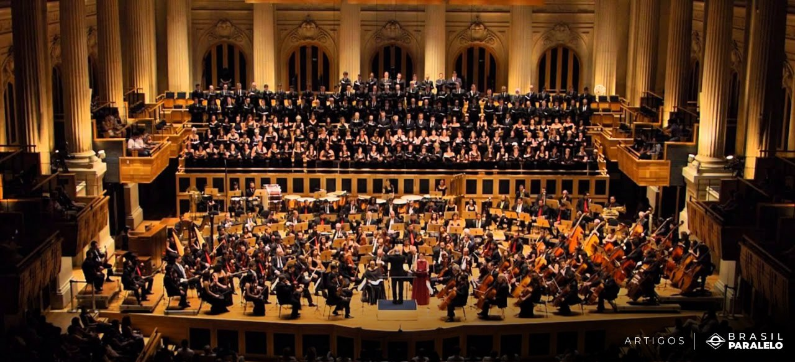
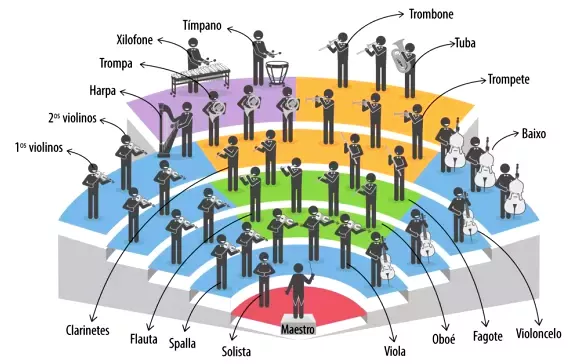

Uma orquestra é um grupo de músicos que interpretam obras musicais com vários instrumentos. Orquestra também o lugar compreendido entre o palco e a plateia.
O termo provém da língua grega e significa “lugar para dançar”. O conceito surgiu no século V a.C., época em que os teatros dispunham de um espaço separado para os cantores, os bailarinos e os músicos que se chamava precisamente orquestra.
No século V a. C, quando existiam as apresentações teatrais, esse termo “orquestra” era utilizado para descrever um espaço circular ou mesmo semicircular que se localizava perto da plateia. Esse espaço era destinado a dançarinos e cantores de um coro, os quais tinham suas apresentações acompanhadas por instrumentos musicais como flauta, tambores, cítaras, etc.
Uma orquestra de músicos pode ter diversas composições. Em geral, compreende quatro grupos de instrumentos: as cordas (que incluem violinos, violoncelos, violas, contrabaixos, arpas e pianos), as madeiras (flautas, flautins, oboés, clarinetes, fagotes, contrafagotes e cornes-ingleses), os metais (trombones, trompetes, trompas e tubas) e os instrumentos de percussão (tímpanos, pratos, entre outros). Em inglês, usa-se o termo “orchestra”.

A orquestra é um conjunto formado por músicos instrumentistas. As primeiras surgiram na Europa, no século XVI, e passaram, ao longo do tempo, por modificações em seu formato e nos tipos de instrumentos usados. A orquestra sinfônica pode chegar a ter até 120 executantes. Já a orquestra de câmara até 50 (20 ou 30 integrantes é o mais usual).
A orquestra é formada por grupos de instrumentos (naipes) de cordas, madeiras, metais e percussão. Adicionalmente, dependendo da obra a ser tocada, outros instrumentos podem ser acrescidos, como piano, harpa, violão, saxofone, e assim por diante.

Nesse sentido, a música é uma forma de aproximar as pessoas e promover a criação de novas relações. Por exemplo, em eventos onde todos apreciam o mesmo estilo musical, ou sendo um assunto inicial entre pessoas que acabaram de se conhecer.
Fontes:
- conceito.de: https://conceito.de/orquestra
- Clássicos dos clássicos: https://classicosdosclassicos.mus.br/a-orquestra/
Tem certeza que deseja encerrar sua sessão?